Short story
10,000–50,000 words
- Submit byDec 15, 2026
- Judging & awardsDec 16–31, 2026
Completed stories only.
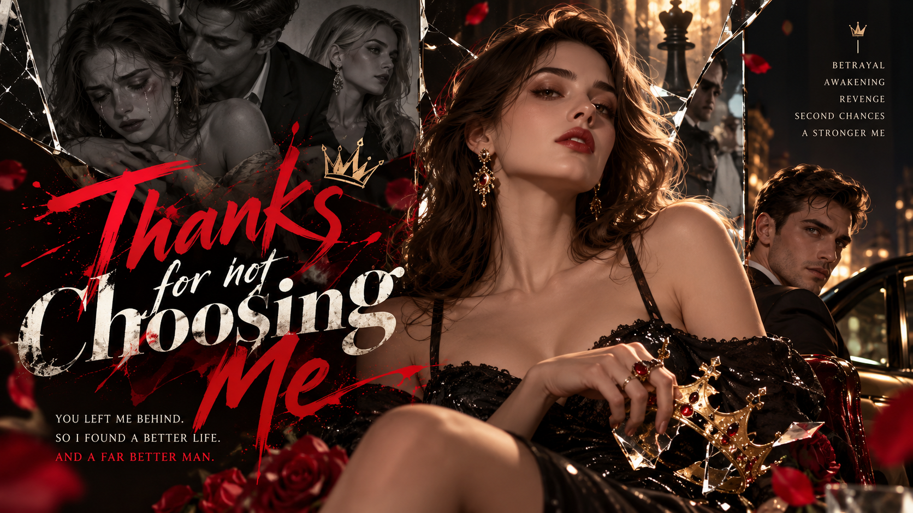
He chose someone else. She became the best version of herself and found someone better.
He promised you forever, then chose his first love. He called you his destined mate, then rejected you before the entire pack. You thought losing him would be the end of your story.
What if it was the beginning of a life you never imagined?
Thanks for Not Choosing Me celebrates heroines who are overlooked, passed over, or left behind, yet refuse to let someone else define their worth. The person who fails to choose her could be a lover, a parent, a best friend, a child, or even an entire family.
We want stories about heartbreak and forbidden attraction, but also friendship, family, ambition, personal growth, and finding the people who truly love and respect her. She might discover a better love, reclaim her career, rebuild her family, or create an entirely new life.
Not being chosen is only the beginning. What she chooses next is the story.
All dates and times are UTC+8.
Both tracks open Oct 8, 2026
10,000–50,000 words
Completed stories only.
Over 50,000 words to enter review
Ongoing novels welcome.
Winners may choose which of their own books to promote.
The grand prize and first prize are exclusive. All other prizes are open to exclusive and non-exclusive entries. Each author can win only one main prize; all other awards can be won in addition.
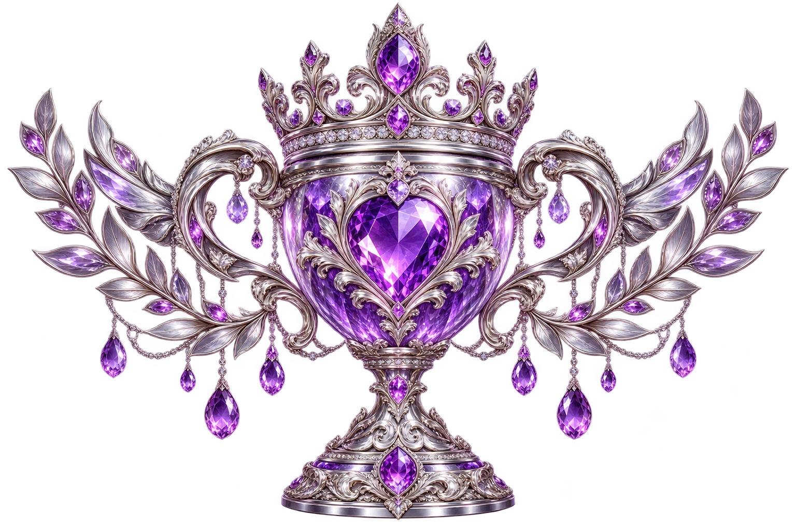
1 winner
each · 2 winners
each · 2 winners
Grand prize: Exclusive · Priority IP adaptation review.
Grand Prize: Exclusive contract and 200,000+ words by the submission deadline, Mar 31, 2027. Other long-novel prizes: 150,000+ words by the same deadline.
47 awards · $60–$600 each
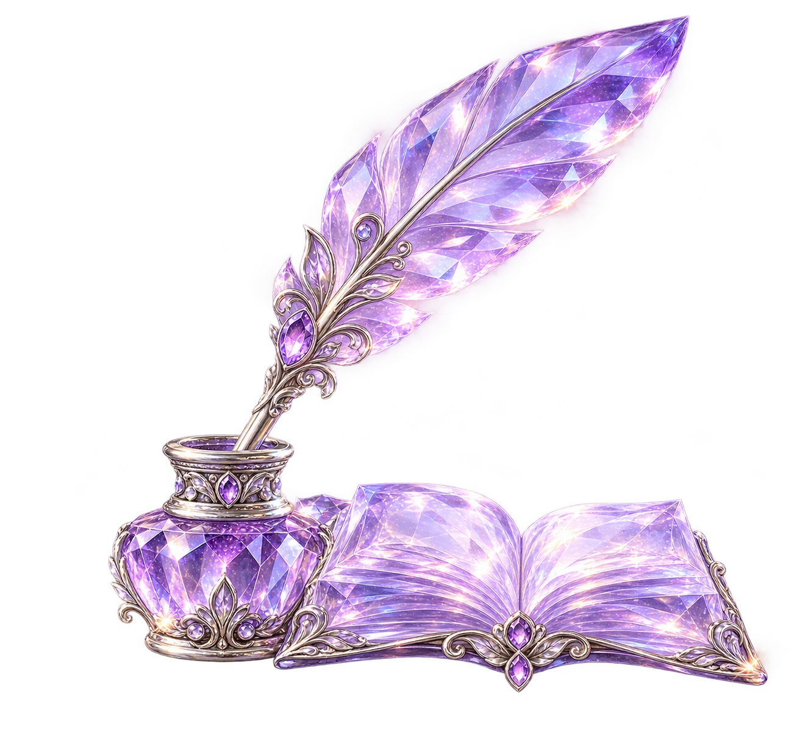
2 winners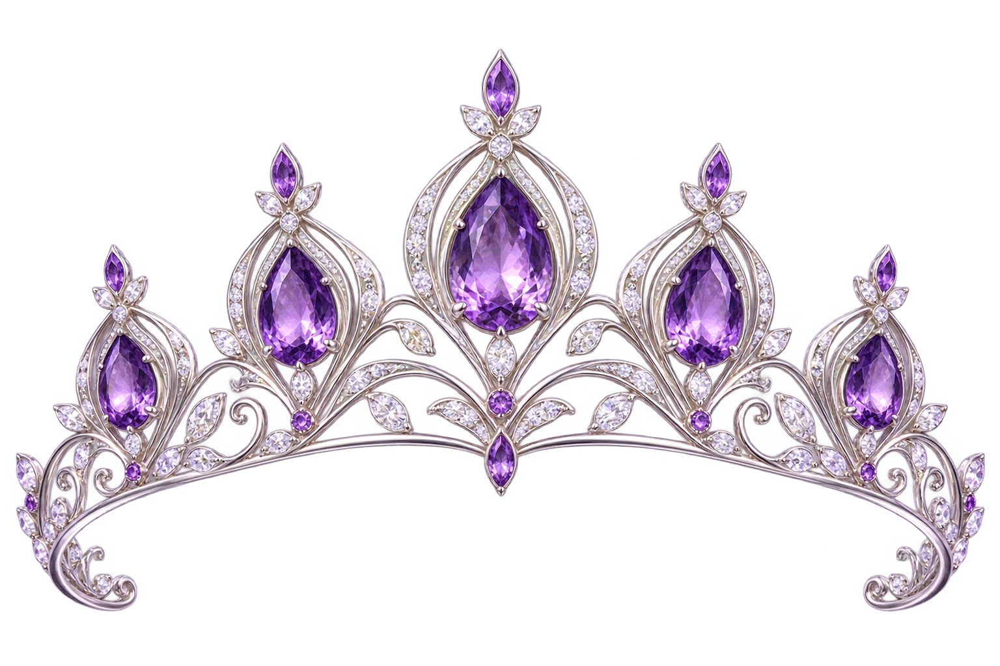
2 winners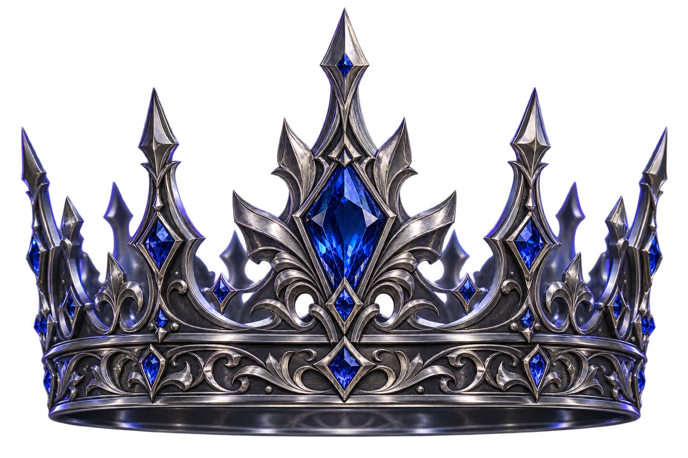
2 winners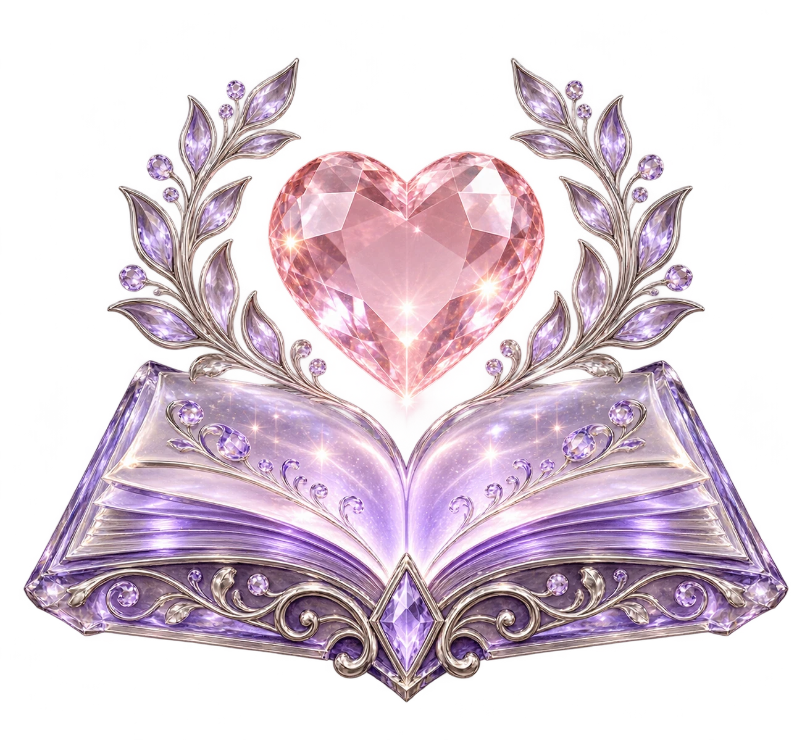
1 winner+ 2 promotions
40 awards · Monthly Top 10
Nov 2026–Feb 2027
1 winner
each · 2 winners
each · 3 winners
First prize: Exclusive.
8 awards · $150–$200 each
Someone important chooses someone or something over her. Show what she chooses next: love, family, friendship, career, or herself.
10,000–50,000 words. Only completed stories qualify; finish by Dec 15, 2026.
If serializing, update 2–3 chapters weekly.
Over 50,000 words for review, 150,000+ for prizes, 200,000+ for the Grand Prize.
All word counts are due by the submission deadline, Mar 31, 2027.
Update 5 chapters weekly while serializing.
Original English fiction only. Exclusive and non-exclusive submissions to RocNovel and SuperStory are welcome when rights permit.
Short First Prize and Long Grand Prize require exclusive publishing contracts with InkPort.
Submit more than one story. Each author can win only one main prize (First, Second or Third Prize; Grand Prize, Gold or Silver). All other awards can still be won in addition.
No plagiarism or fake reads. Violations may disqualify entries. The editor-in-chief has final review.
Begin with the moment she was not chosen. Then let her write a different future.
Choose a genre to explore its five illustrated prompts.
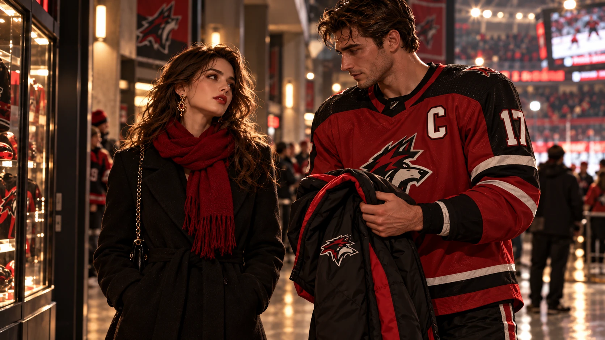
Hockey Romance · Public Betrayal · Rival Romance
My boyfriend promised to kiss me on the ice if his team won the semifinal. Instead, he skated past me and kissed the cheer captain in front of thousands of fans. As I stood there humiliated, the captain of the team they would face in the championship final approached and offered me his jacket.
"Come with me. Let's give them something else to talk about."
I agreed to one date, hoping to make my ex jealous. But the arrogant hockey captain turned out to be surprisingly gentle, and our attraction soon became impossible to ignore. Now my ex wants me back, just as the two captains prepare to face each other in the championship final.
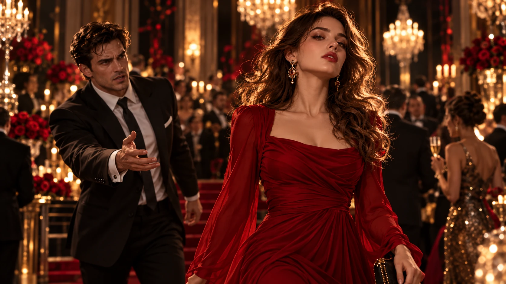
Bully Romance · Unrequited Crush · Jealousy · Groveling
I spent two years secretly loving the richest, most popular boy at our college, even though he constantly mocked me for being poor and embarrassed me in front of his friends. At his birthday party, someone dared him to kiss the ugliest girl in the room. He looked straight at me and laughed.
That was the night I finally stopped loving him.
I blocked his number, quit tutoring him, and started dating someone who actually respected me. Suddenly, my former bully was everywhere, interrupting my dates and demanding to know why I no longer wanted him. But when his friends humiliated me again, would he finally stand up for me, even if it meant losing everything he'd once valued?
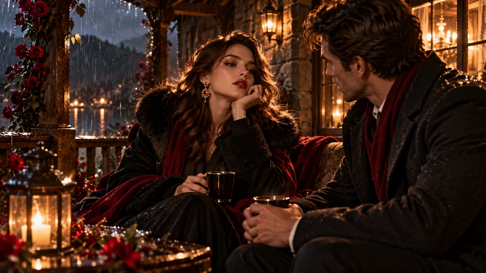
Brother's Best Friend · Forbidden Romance · Age Gap · Slow Burn
I've loved my older brother's best friend for as long as I can remember. When we reunited during my second year of college, I finally confessed my feelings. He rejected me, insisting I would always be his best friend's little sister.
Heartbroken, I decided to move on and started dating another guy. But suddenly, the man who'd rejected me couldn't stand seeing someone else touch me.
One night, he admitted he wanted me too, but my brother had warned him that dating me would destroy their friendship. Now he's torn between the loyalty he's protected for years and the girl he can no longer stop thinking about.
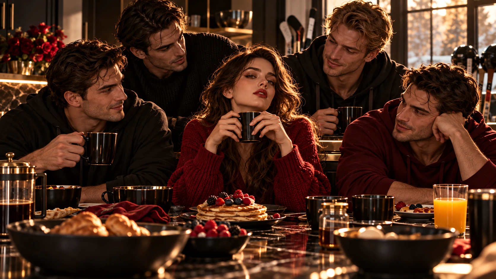
Forced Proximity · College Romance · Why Choose
My boyfriend cheated on me with my roommate. I couldn't bear living with them any longer, so I moved out. The only room I could afford was in a house shared by four hockey players, including my ex's former best friend and the team's notoriously cold captain.
Their only rule was simple: no dating roommates.
The playboy brought me breakfast, the quiet goalkeeper waited up when I worked late, my ex's former best friend defended me against campus rumors, and the captain grew furious whenever my ex approached. When one of them finally kissed me, everything changed.
Now four very different men want me, and none seems willing to walk away. Who says a girl who wasn't chosen has to choose only one?
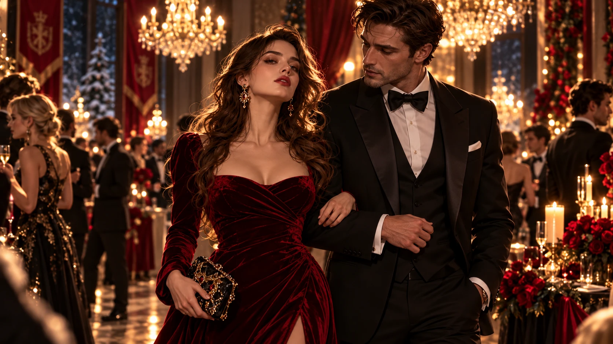
Fake Dating · Revenge Romance · Fake to Real
My boyfriend dumped me at our university's winter formal and announced he'd been secretly dating the student council president. By morning, a video of my humiliation had spread across campus.
Then his biggest rival, the wealthy debate champion, offered me a deal. He needed a fake girlfriend to get rid of his persistent ex, and I needed everyone to stop pitying me.
We agreed to pretend until the end of the semester. No feelings, no jealousy, and absolutely no falling in love.
But the fake kisses started feeling real, and my ex suddenly wanted me back. When our arrangement was exposed in front of the entire university, my pretend boyfriend grabbed my hand and declared, "The relationship was fake. Falling in love with her wasn't."
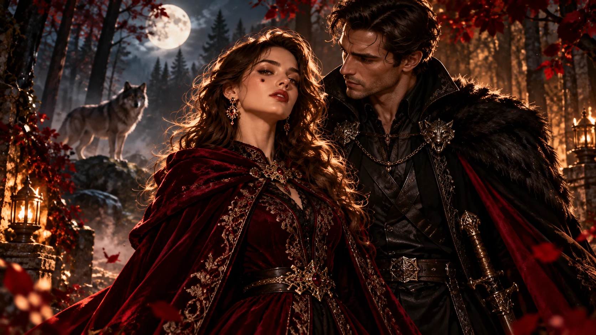
Rejected Mate · Rival Alpha · Second Chance Romance
At the Moon Ceremony, I discovered that my fated mate was the Alpha heir I'd loved since childhood. But instead of claiming me, he publicly rejected me and chose his childhood sweetheart, saying a weak Omega who couldn't shift would never become his Luna.
I accepted the rejection and fled to the pack border, where his greatest enemy, a feared Rogue Alpha, found me collapsing from the broken bond.
He offered me protection without demanding anything in return. For the first time, an Alpha cared about what I wanted. But as I began falling for him, my former mate discovered that rejecting me had weakened his wolf. Now he wants me back, and his rival refuses to let me go.
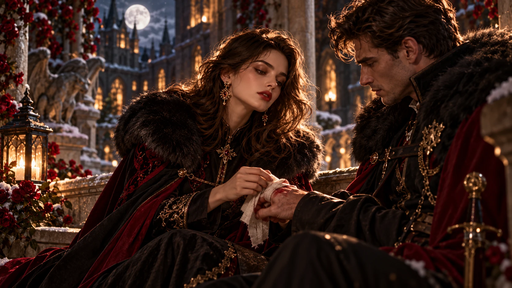
Wolf Academy · Wolfless Omega · Forced Proximity
I entered an elite wolf academy as a scholarship Omega who couldn't complete my first shift. When the school's most powerful Alpha heir discovered we were fated mates, he publicly rejected me and chose his popular childhood sweetheart instead.
I left the Alpha Partner Program and joined the wolf-healing department.
Then my former mate suddenly lost the ability to shift. No healer could help him, but his wolf responded the moment I touched him.
Now he needs me as his secret training partner to save his Alpha inheritance. By day, he still refuses to acknowledge our bond. By night, his wolf won't let me leave. And when another Alpha begins pursuing me, his jealousy threatens to expose everything.
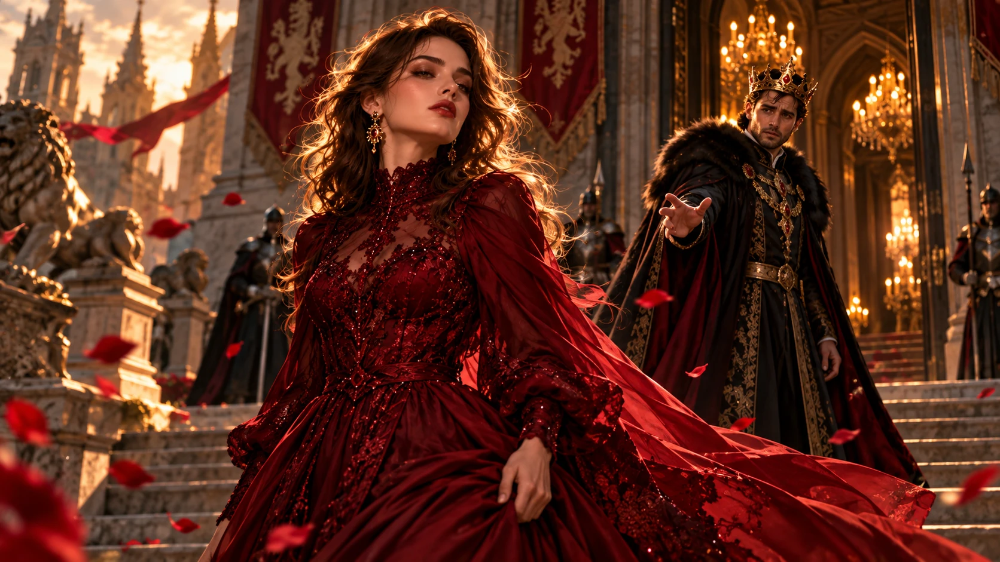
Reborn Luna · Betrayal · Alpha Regret · New Destiny
In my previous life, I gave everything to my Alpha, only for him to sacrifice my healing wolf to save his childhood sweetheart. I died alone while they celebrated their mating ceremony.
When I opened my eyes again, it was the morning of our wedding.
This time, I refused to marry him. I withdrew my family's support and fled to a distant healing sanctuary ruled by a feared Lycan King. He was cold, suspicious, and convinced I was a spy, but he never demanded that I sacrifice myself for him.
As our feelings grew, my former Alpha discovered he was losing the powers my wolf had once given him. Now he wants a second chance, but I've already begun falling for the man he fears most.
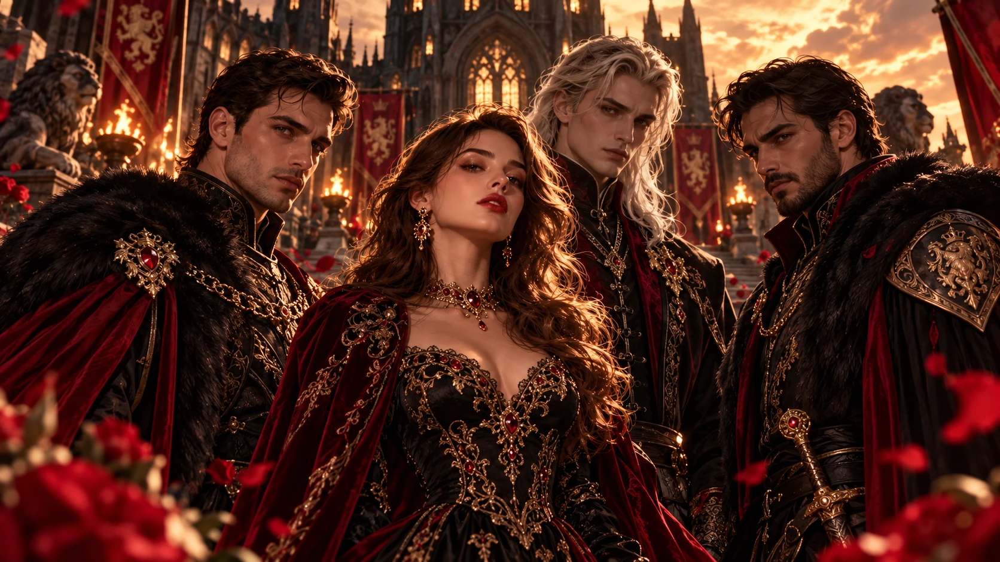
Multiple Fated Mates · Why Choose · Wolf Academy · Reverse Harem
I was the weakest Omega at our academy, mocked for being unable to shift. But at the annual Moon Ceremony, three mating marks suddenly appeared on my wrist, binding me to three of the school's most powerful Alphas.
One was the arrogant heir who'd bullied me for years. Another was his cold, brilliant rival. The third was a dangerous Rogue Alpha everyone had been warned to avoid.
All three wanted me, but none was willing to share.
I refused to become a prize they could fight over. Yet as we were forced into a special bonding trial, jealousy slowly turned into attraction, and I found myself developing feelings for all three.
Then we discovered the truth: our four wolves shared an ancient forbidden bond, and rejecting even one mate could destroy us all.
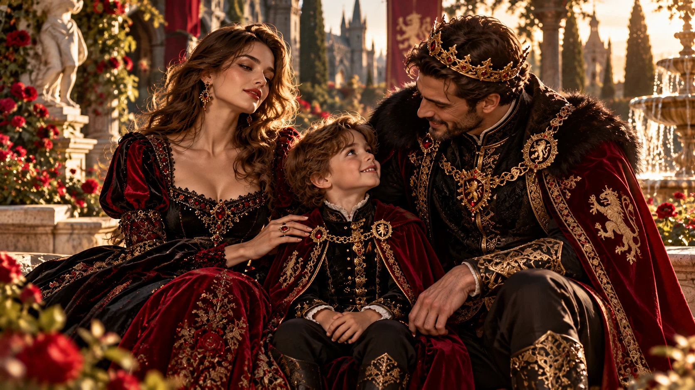
Pregnant Runaway Luna · Secret Pup · Second Chance Mate
The night I discovered I was pregnant, my Alpha announced he was replacing me with his childhood sweetheart. He said she would give the pack stronger heirs, so I accepted his rejection and disappeared without telling him about our baby.
Four years later, I'd built a peaceful life with my son, thanks to a powerful Lycan King who had protected us when no one else would.
He taught my son about pack traditions, remembered every bedtime story, and never asked me to love him in return. But just as I began falling for him, my former Alpha returned, desperate to reclaim his Luna and produce an heir.
He didn't know the little boy playing in the garden was his son. And he certainly didn't expect the child to run straight into the Lycan King's arms, calling him Daddy.
Wedding Betrayal · Billionaire Rival · Second Chance Love
My fiancé's childhood sweetheart arrived before our wedding ceremony in a white designer gown. She pushed her way into our pre-ceremony photos, clung to his arm, and demanded his attention while I stood beside them in my wedding dress.
When she suddenly collapsed moments before our vows, he abandoned me at the altar to take her to the hospital.
An hour later, he returned with shocking news. She was pregnant with his child, but he still expected me to marry him.
I walked away. The only man who followed me was the billionaire hotel owner my fiancé had spent years trying to impress. He offered to help me rebuild the career I'd sacrificed for my engagement.
But just as I began falling for him, my ex returned, determined to reclaim the bride he'd thrown away.
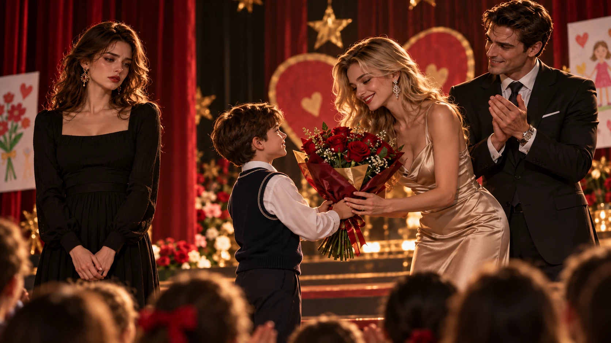
Family Betrayal · Single Mom · Billionaire Romance
On Mother's Day, my eight-year-old son walked onto the school stage holding a bouquet of roses. Instead of giving them to me, he handed them to my husband's beautiful assistant and announced, "She's the mom I wish I had."
My husband smiled and applauded.
That night, I discovered their affair and filed for divorce. I returned to the career I'd abandoned, where I met a widowed billionaire raising a little girl who had never accepted anyone as her new mother.
As our families grew closer, I found myself falling for a man who valued everything my ex had taken for granted.
But when my husband and son came begging for their old family back, could I forgive my child without returning to the man who'd broken my heart?
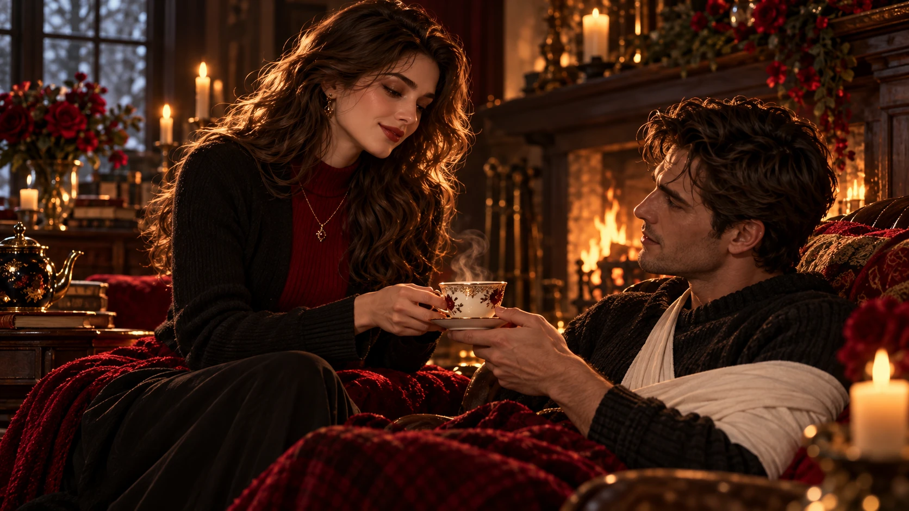
Amnesia Romance · Fake Marriage · Hidden Billionaire · Forced Proximity
After my boyfriend cheated with my best friend and stole our wedding savings, I retreated to my grandmother's cottage.
One stormy night, I rescued an injured stranger beside a crashed car. He woke in the hospital with no memory, terrified of two suspicious men who kept asking about him.
When he grabbed my hand and asked, "Are you my wife?" I lied, hoping to keep him safe until we knew who was looking for him.
After his doctors cleared him to leave, he chose to recover at my cottage. He fixed my porch, made breakfast, and treated me like the wife he thought he'd forgotten. I wanted to tell him the truth, but every day I fell harder, and every day the lie became more difficult to confess.
Then a fleet of luxury cars arrived. My supposed husband was actually a missing billionaire, and my ex desperately needed his investment.
When his memories finally returned, he looked at me and asked, "Were you protecting me, or using me?"
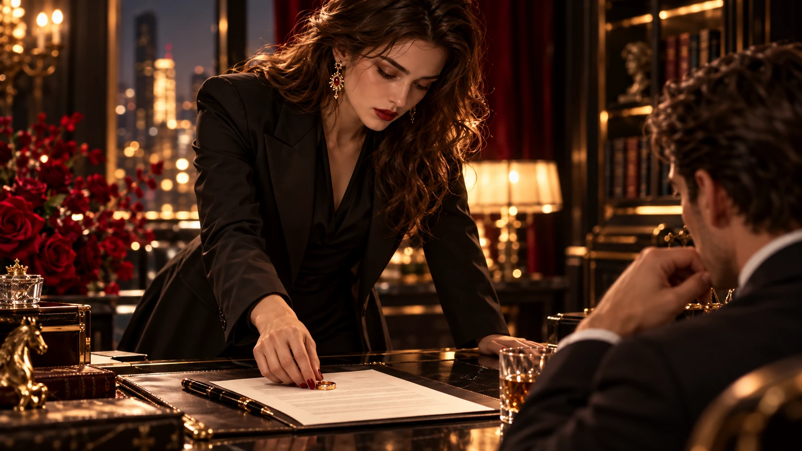
Contract Marriage · Divorce · Enemies to Lovers
I married a cold-hearted billionaire for one year to save my family's business. Our contract forbade love, but after caring for him through illness and helping his family, I fell for him anyway.
Then his first love returned, and he ended our marriage early so he could marry her.
I signed the divorce papers and walked away.
Months later, I started working for his biggest business rival, an arrogant CEO who made no secret of his attraction to me. We clashed over everything, but somewhere between late-night meetings and unexpected kisses, our professional relationship became something much more dangerous.
Then my ex realized he'd made a terrible mistake and demanded me back, just as I was falling for the man capable of destroying his empire.
Marriage Betrayal · Medical Romance · Second Chance Love
My husband promised he would hold my hand when our daughter was born. Instead, he boarded a private plane to comfort his childhood sweetheart, whose engagement had just fallen apart. I went into premature labor alone. When I finally reached him, he said her emotional breakdown was more urgent than my contractions.
Our daughter survived, but she needed weeks of hospital care. He didn't visit until the third day. And when he arrived, he brought his childhood sweetheart with him. She wanted to see the baby. I wanted a divorce.
The man who helped me through those terrifying weeks was a widowed hospital foundation director who had spent years avoiding another relationship. He never tried to replace my daughter's father. He simply kept showing up when I needed help. Eventually, I realized my daughter and I deserved a love that didn't need to be begged for.
But years later, my ex discovered I had remarried, and the man raising his daughter was the billionaire he needed to save his failing company.
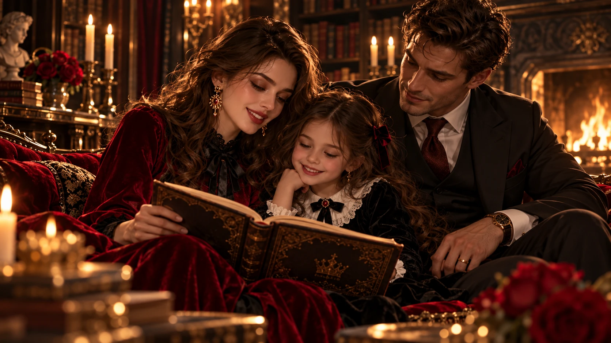
Mafia Single Dad · Private Tutor Romance · Grumpy × Sunshine
My boyfriend left me for his boss's daughter. Her father was a major donor to the private school where I taught, and my contract was suddenly terminated. Desperate for work, I accepted a live-in tutoring job for the six-year-old daughter of a ruthless Mafia Don.
His little girl hadn't spoken since her mother died, and five tutors had already quit.
I was supposed to teach her, not become part of the family. But she slowly began speaking again, and her cold-hearted father started finding excuses to spend time with me.
Just as I realized I was falling for him, my ex arrived at the mansion hoping to secure a business deal.
He laughed when he saw me, mocking me for becoming a rich man's hired help.
Then the little girl ran into the room, hugged me, and asked her father, "Daddy, can you please marry her?"
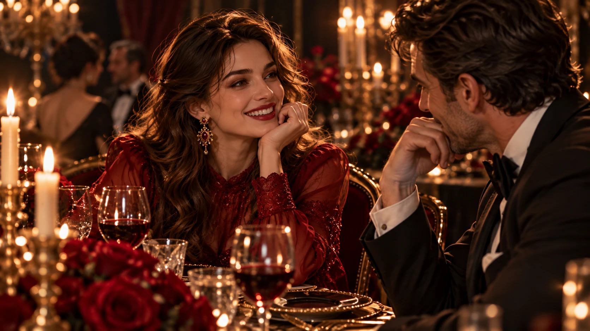
Forbidden Romance · Ex's Uncle · Age Gap · One-Night Stand
My boyfriend humiliated me at his birthday party by announcing he was leaving me for my best friend.
Heartbroken, I went to a hotel bar, where I met a dangerously handsome older man who made me forget everything for one night.
The next morning, I discovered he was the ruthless Mafia Don who controlled half the city.
And my ex-boyfriend's uncle.
I thought our night together would remain a secret. Instead, he started pursuing me, making it clear he wanted more than a casual affair.
When my ex discovered us, he accused me of sleeping with his uncle for revenge.
Then the Mafia Don invited me to a family dinner, pulled out the chair beside him, and told his furious nephew, "You had your chance. Now she's mine to pursue."
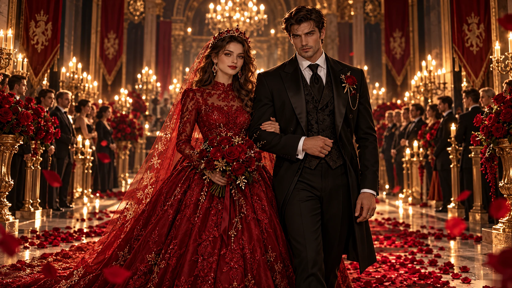
Mafia Arranged Marriage · Enemy Don · Political Marriage
One week before our arranged wedding, my fiancé abandoned me to marry a politician's daughter, claiming her family connections were worth more than our years together.
To repair the broken alliance, my father arranged another marriage for me, this time with the ruthless head of my former fiancé's greatest rival family.
I expected a cold, loveless marriage. Instead, my new husband gave me a choice, respected my boundaries, and slowly became the man I'd never expected to love.
But just as our marriage turned real, I discovered a terrible secret.
My former fiancé had deliberately pushed me into this marriage so he could use me to destroy my husband's family.
Now I had to choose between protecting the man I loved and exposing a conspiracy that could start a Mafia war.
Mafia Surrogacy · Contract Pregnancy · Forbidden Attraction
After my boyfriend dumped me for a wealthy heiress, my younger sister needed an expensive medical treatment. I agreed to a gestational surrogacy arrangement with a mysterious billionaire who wanted an heir but had no interest in marriage.
Only afterward did I discover he was a ruthless Mafia Don.
Once the pregnancy was confirmed, he invited me to stay in his heavily guarded mansion. What began as a strictly professional arrangement soon became late-night conversations, unexpected tenderness, and feelings neither of us had planned.
Then my ex returned, threatening to expose the arrangement unless I helped him secure a deal with the Mafia Don.
I wanted to believe the man protecting me had fallen in love with me. But how could I know whether he truly wanted me, or only the baby I was carrying?
Secret Baby · Runaway Heroine · Rival Mafia Don · Found Family
When I told my Mafia heir boyfriend I was pregnant, he announced he was marrying another woman to strengthen his family's power. He offered me money to disappear, then swore our child would never carry his name.
So I left.
Five years later, I was raising my little boy in a quiet coastal town, where a mysterious businessman had become the person we trusted most. He taught my son to swim, helped us whenever we were in trouble, and never asked for anything in return.
Just as I began falling for him, my ex returned, demanding his son.
Only then did he recognize the man standing beside us.
The quiet businessman was the head of a rival Mafia family.
And my son was already calling him Daddy.
InkPort partners with RocNovel and SuperStory to help authors reach more readers. RocNovel and SuperStory focus on short fiction and long novels, respectively.
Not being chosen doesn't mean her story is over. Perhaps she'll find an unexpected love, reconnect with the people who truly care, rebuild her dreams, or discover that the most important choice she can make is choosing herself.
Submit your story